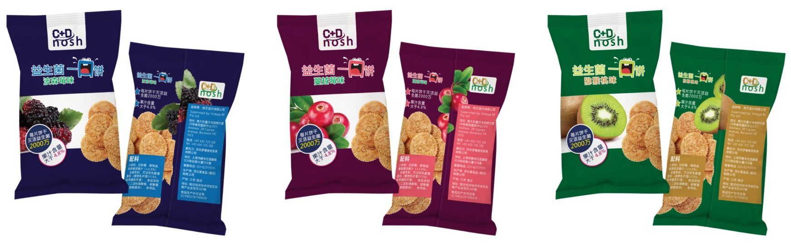
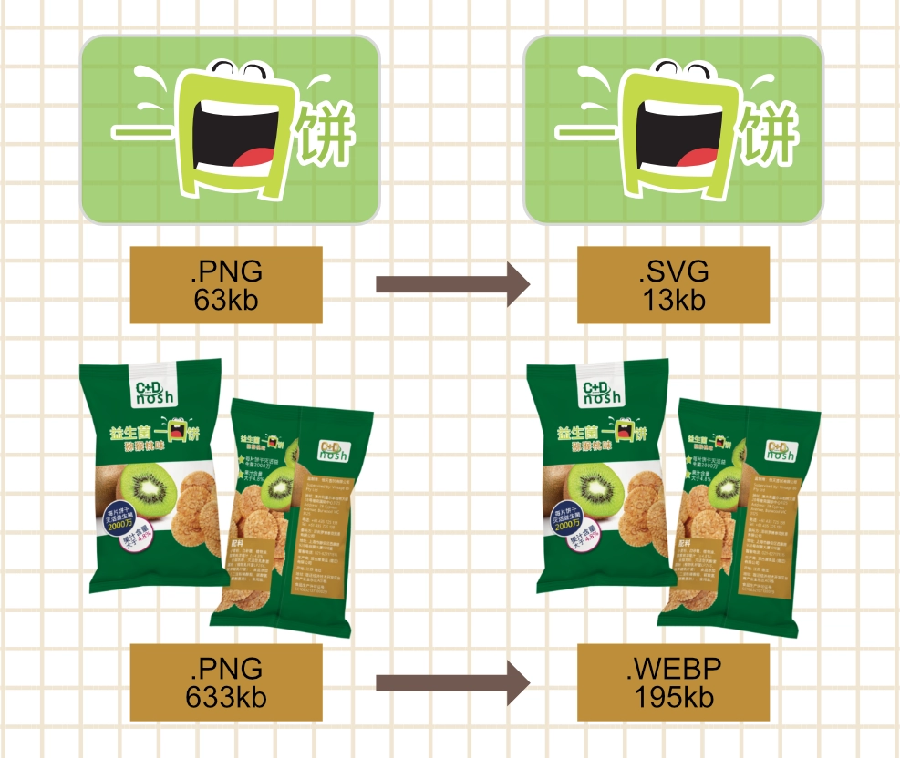

C+D Nosh Biscuits
Lead Brand Designer & Front End Developer
Bridging physical packaging and programmatic web architecture. C+D Nosh transforms a multi lingual print production job into an interactive, eCommerce storefront. Powered by a custom JavaScript theme engine, the interface dynamically mutates colour tokens, typography themes, and vector assets in real time based on active flavour selections. Proving how print precision elevates digital product storytelling.

Print Constraints & Multi Lingual Prepress
Designing physical packaging requires manufacturing precision. To break away from cold, medicinal supplement branding, I developed an energetic aesthetic while adhering to strict Chinese typography rules and print stroke limits across three flavour variants: Kiwi, Cranberry, and Boysenberry.

Flavours Identity & Semantic colour System
I engineered a scalable visual system anchored by an expressive "mouth" mascot. To establish instant product recognition on shelf and screen, I mapped a deliberate colour system across the line: crimson for Cranberry, lime green for Kiwi, and deep cobalt for Boysenberry.
Stroke weights and contrast values were calibrated to preserve mascot presence when nested beside dense compliance blocks.
Frictionless Interaction Architecture
Before coding the storefront, I mapped an interaction blueprint to eliminate dropdown menu fatigue. Designing a flat horizontal tap system leverages instinctive mobile card patterns, turning flavour selection into instant interaction triggers for real time visual feedback.


Asset & Web Performance
With my graphic design background, I engineered an aggressive export pipeline to guarantee web performance. Vector art was deployed as lightweight 13kb SVGs, while high-res
633kb PNG renders were re-encoded into 195kb .webp files. Cutting asset overhead by over 60% without sacrificing visual fidelity.
Theme Engine & AI Acceleration
To execute the complex theme switching engine rapidly, I directed Google Gemini AI Canvas to generate dynamic JavaScript DOM manipulation templates. I then refactored and debugged the codebase, mapping a centralized dictionary model that mutates background hex codes, CSS class modifiers, and SVG paths instantly upon user clicks.
// 1. Data System: Centralized copy assets per flavour variant
const flavourStories = {
cranberry: "Enjoy a sophisticated burst of tart sweetness...",
kiwi: "Refresh your palate with a zesty, tropical crunch...",
boysenberry: "Indulge in the deep, jammy notes of premium Boysenberries..."
};
// 2. Theme Engine: Mutating DOM class states to swap CSS design tokens
function changeFlavour(flavourName, event) {
const body = document.body;
const title = document.getElementById('flavour-title');
const productImg = document.getElementById('biscuit-pack');
const heroLogo = document.querySelector('.flavour-logo');
const detailText = document.getElementById('detail-text');
// Dissolve previous active themes and apply new CSS tokens
body.classList.remove('theme-kiwi', 'theme-cranberry', 'theme-boysenberry');
body.classList.add(`theme-${flavourName}`);
// Asset Pipeline: Dynamically mapping optimized WebP and SVG assets
productImg.src = `assets/pack-${flavourName}.webp`;
heroLogo.src = `assets/logo-${flavourName}.svg`;
title.innerText = flavourName.charAt(0).toUpperCase() + flavourName.slice(1) + " & Probiotic";
detailText.innerText = flavourStories[flavourName];
// State Management: Toggling active navigation triggers
document.querySelectorAll('.flavour-btn').forEach(btn => btn.classList.remove('active'));
if (event) event.currentTarget.classList.add('active');
}
Visual Routing Transitions
To eliminate harsh browser jumps and preserve brand immersion across page loads, I engineered a custom asynchronous transition manager in JavaScript.
By intercepting browser routing (`e.preventDefault()`), the script triggers a hardware-accelerated CSS fade animation (`page-fade-out`) and a 400ms timing window, allowing the DOM body to complete its exit transition before passing the URL to the routing engine.
// Intercept Routing: Hijacking standard anchor links
document.querySelectorAll('.transition-link').forEach(link => {
link.addEventListener('click', function(e) {
e.preventDefault();
const destination = this.href;
// Reset UI States & trigger outbound CSS transition
toggleMenu();
document.body.classList.add('page-fade-out');
// Timed Redirection: Delay routing until animation completes
setTimeout(() => {
window.location.href = destination;
}, 400);
});
});